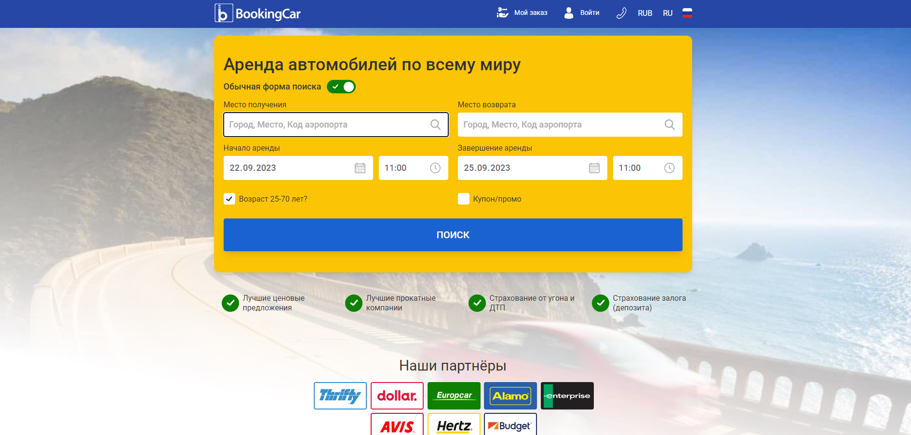

Узнать больше о проекте. Проект напасан с помощью :
PHP framework Symfony, Twig tamplate, backend lag - PHP, frontend lang - JS vanilla Чем занимался на проекте :
Проект изначально написан на вышеперечисленных технолониях в 2011-2012 годах разработчиками из Европы. Далее проект решили обновить частично, а именно систему поиска с изменением логики и UI по новому дизайну. В 2019-2020 годах комаанда из России взялась за это проект, переписывали обновляемую часть платформы на Vue 2. Результат их работы находится на тестовом сервере . Лично мне не известна причина приостановки разработки новых изменений и их внедрение, как и причина по который передомной была поставлена задача переписать поисковое окно на Reactjs в том же виде что и на Vue 2 и по новому дизайну разработать поисковую выдачу. Работу которую проделал я в виде деплоя можно посмотреть тут - первоначально перед вами будет непосредственно поисковое окно, кликните на кнопку "поиск" для перехода к поисковой выдаче. К бекенду при мне мы так и не подключили мою часть приложения, а сам код можно посмотреть в данном репозитории.
Мои задачи и стек технологий на проекте :
Reactjs 18 на typescript(Formik, React-Router-Dom, FC, Hooks), CSS-module(все нативные элементы были переделаны без использования библиотек).
Цель - по макету Figma сверстать поисковое окно(планировалось дальнейшее подключение логики и заложена основа для этого). Реализовать страницу поисковой выдачи в соответсвии с дизайном и реализовать всю логику UX.